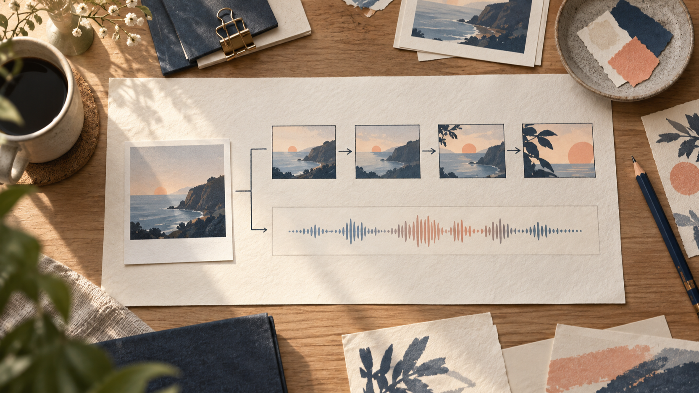
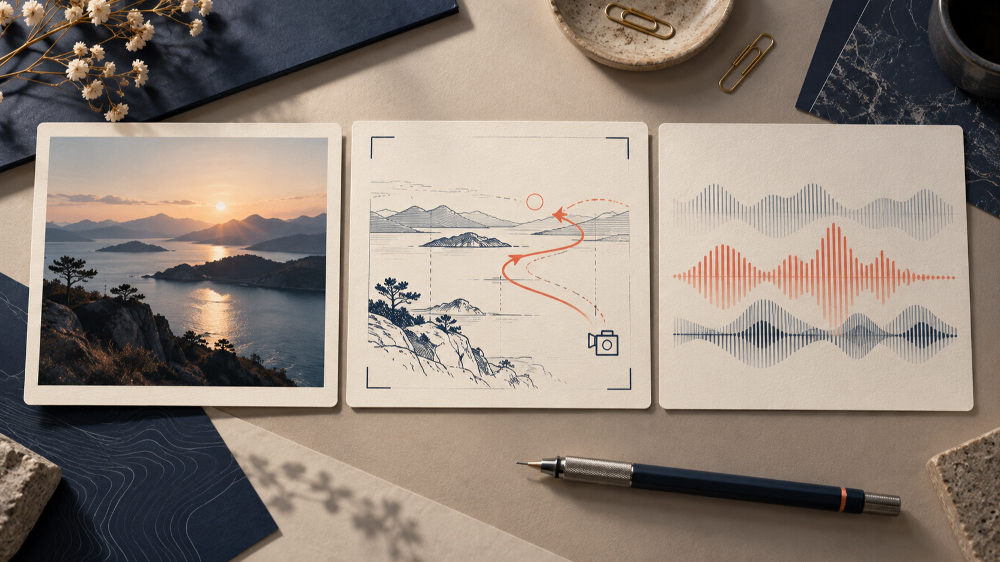
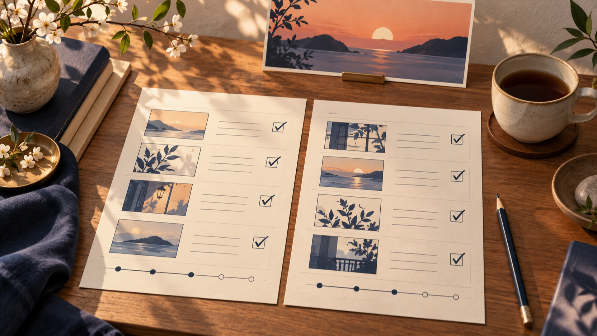

FLUX 3とMiniMax H3のAI動画生成を、素材・動き・音の設計から考える
AI動画生成を選ぶとき、最初から「どちらが上か」を決めるより、作りたい短い場面をどう分解するかを先に考えるほうが迷いにくくなります。ここでは、静止素材、動きの到達点、音という三つのメモを用意し、Flyneが案内している二つの利用経路を読み分けます。
2026年9月9日に確認したFlyneのFLUX 3 AI動画生成ページは、テキスト・画像・開始／終了フレームを起点にする案内を掲げています。同じくFlyneのMiniMax H3 AI動画生成ツールページは、プロンプトや画像から、動き・画角・雰囲気・音を含む場面を組み立てる案内です。以下は各ページの自己記載を、企画の入り口として整理したものです。同一条件で生成した出力を比較した実測ではありません。
FLUX 3とMiniMax H3のAI動画生成で、最初に分けること
一枚の画像から動画を考えるときは、「何を出発点にするか」「画面をどこへ動かすか」「音に何を担わせるか」を別々に書き出します。例えば、夕景の写真を出発点にするなら、素材には被写体と時間帯、動きにはカメラの寄り方や人物の移動、音には環境音か会話かを置きます。三つを一文に詰め込まず、短いメモにしておくと、入力の試行錯誤を追いやすくなります。

図1：素材・動き・音を分けて考えるための編集用イラスト。FLUX 3またはMiniMax H3の生成出力やテスト結果ではありません。
FLUX 3は、開始と終了の画を先に置きたい場面で読む
Flyneの2026年9月9日時点の説明では、FLUX 3はテキスト、画像、キーフレームを入力の起点として案内し、開始・終了フレームを使う設計も示しています。たとえば「最初は窓際の引き、最後は机上の寄り」のように、場面の両端を先に決めたいときは、二枚の画と途中の動きを別々にメモしておくとよいでしょう。
同ページはネイティブ音声、5〜20秒、720pまたは1080pという案内も掲載しています。これはFlyneのページにある条件の記載であり、利用者の素材、指示、設定による結果を保証するものではありません。数字だけで判断せず、短い場面で何を確認したいのかを先に決めるほうが、入力の目的がぶれません。
MiniMax H3は、場面の演出を文章にしてから読む
Flyneの2026年9月9日時点の説明では、MiniMax H3はテキストまたは画像からの動画化、プロンプト主導の場面演出、画像から動画へのアニメーション、ネイティブステレオサウンドを案内しています。人物が何をするか、カメラがどこにいるか、空気感をどう置くかを短く分けて書き、必要なら音の種類も独立した行にすると、企画時の確認項目になります。

図2：素材・動き・音の役割を分ける編集用イラスト。モデルの画面、出力、比較テストを示すものではありません。
同ページには最大2K、最長15秒という案内があります。これもFlyneによる製品ページ上の記載です。解像度や秒数を優劣の結論に置くのではなく、作りたい場面に必要な素材、時間、音の条件として読みます。今回、両者を同一条件で生成する独立テストは行っていません。
長さや解像度の数字は、用途の条件として読む
二つのページには異なる入力や時間・解像度の案内があります。しかし、数値が近いことや異なることだけで、完成した動画の表現を予測することはできません。素材の種類、指示の具体性、選ぶ設定、制作時の確認手順が異なるからです。
はじめの一回では、同じ企画メモをそのまま比較用の指示に変える必要はありません。静止画像から始めるのか、テキストから始めるのか、開始と終了の画を決めるのか、演出の文章を詰めるのかを先に選びます。その選択が、次に確認する入力項目を決めます。
初めての比較は、同じ完成像を約束しない
実務では、次の順に小さく確認すると記録が残しやすくなります。
- 素材：写真・イラスト・テキストのどれを出発点にするか。
- 動き：開始と終了を置くのか、カメラ・行為・雰囲気を文章で置くのか。
- 音：必要な音の種類を、映像の指示とは別に書くか。
- 条件：必要な長さと解像度を、製品ページの案内と照らして確認するか。
この順番はモデルの優劣を決める手順ではなく、次の試行で何を変えたかを把握するためのメモの型です。ページの記載や利用条件は更新され得るため、実際に使う前には各製品ページをもう一度確認してください。

図3：作成前の確認項目を見直す編集用イラスト。モデルの出力、性能比較、採点結果ではありません。
まとめ
FLUX 3とMiniMax H3を読み分ける入口は、モデル名だけではなく、どの素材から始め、どんな動きを決め、音をどこまで企画に入れるかです。Flyneのページにある入力・時間・解像度・音の説明は、制作条件を考える手がかりにはなります。一方で、本稿は独立した生成テストや出力品質の比較ではありません。実制作では、目的に合う小さな場面を一つ選び、公式の最新案内を確認してから試してください。
執筆者について：本稿の執筆者はFlyneの創業者です。Flyneが案内するFLUX 3とMiniMax H3の利用経路を紹介しています。両モデルを同一条件で生成し、出力を独立に比較したテストは行っていません。